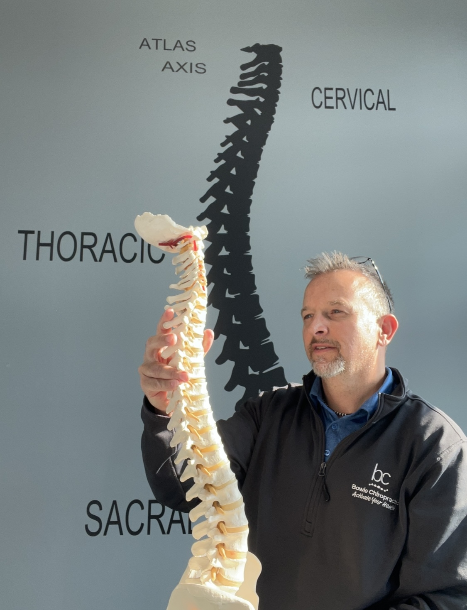
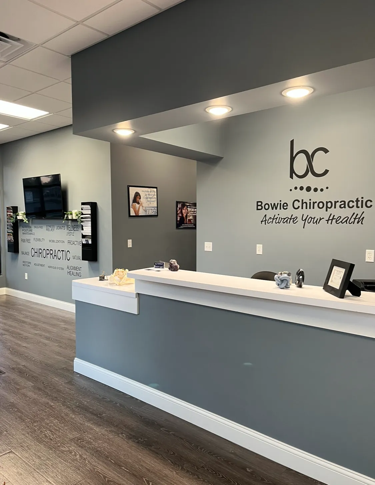

Back and neck discomfort
The two most common reasons people come in. Care addresses the joints and soft tissue involved rather than masking the ache.
Our Core Service
Hands-on, non-invasive care focused on the spine and the nervous system running through it. The aim is not to quiet a symptom for an afternoon. It is to restore how your body moves so the symptom has less reason to come back.
What It Is
Chiropractic care is a conservative, hands-on approach centered on your spine, your joints, and the nervous system that connects them to everything else. There is no surgery and no reliance on medication. Instead, the work is done with the hands, guided by what your body is actually doing.
Your spine is not just structural scaffolding. It is the protected route your nervous system travels to reach the rest of you. That is why a problem in one part of the spine can show up as symptoms somewhere that seems entirely unrelated, and why chasing the pain alone so rarely settles it for good.

How It Helps
The two most common reasons people come in. Care addresses the joints and soft tissue involved rather than masking the ache.
Joints that have quietly stopped moving through their full range tend to give it back once motion is restored.
Long days at a desk or behind a wheel leave a mark. Care works on the restrictions that hold those patterns in place.
Muscles that never fully switch off keep pulling joints out of position. Releasing that tension helps adjustments hold.
Not everyone comes in with pain. Some simply want to move well, recover faster, and keep doing what they enjoy.
When pressure on a nerve eases, the symptoms it was producing often ease with it, including some that seemed unrelated.
How It Works
When a vertebra sits out of position or a joint stops moving the way it should, the tissue around it takes on stress it was never meant to carry. Nerves in that area can become irritated or compressed, and the signals traveling along them get disrupted.
You feel that as pain, stiffness, tingling, weakness, or simply as a body that will not do what it used to do without complaint.
An adjustment restores motion to that joint and reduces the irritation around it. With the interference removed, your nervous system can communicate clearly again, and your body gets on with the job of healing itself, which it is quite good at when nothing is standing in the way.
Supporting Therapies
An adjustment rarely works alone. These therapies address the muscle, tissue, and habits around the joint, which is usually what decides whether the improvement lasts.
Joints do not move on their own. Muscles move them, and when those muscles are tight, fatigued, or guarding an area that hurts, they keep pulling the joint straight back toward the position you are trying to correct.
Manual muscle therapy is focused, hands-on work on that soft tissue. Dr. Bowie works through the muscles surrounding the area to release tension, improve circulation, and reduce the guarding that builds up around an irritated joint. In practice it means your adjustment has a better chance of holding, because the tissue around it is no longer fighting the change.
Electrical stimulation delivers a gentle current to the muscles in a specific area. Most people describe it as a light tingling or a pulsing sensation, and it is not painful. Paired with moist heat, it helps tight muscles relax and eases the discomfort that comes with irritated tissue.
It is often used before an adjustment, to help a tense area settle enough to work with, or afterward, to keep things calm as the change takes hold. If you are someone who tenses up the moment you get near a treatment table, this is frequently where your visit starts.
This technique uses a specialized table that moves in a slow, rhythmic motion while Dr. Bowie guides the movement by hand. There is no forceful thrust and no popping. The table does the gentle work of opening space in the lower back a little at a time.
Because it is so gradual, it suits people who are in significant discomfort, who are nervous about being adjusted, or whose situation calls for a lighter touch than a traditional adjustment. If the idea of a manual adjustment makes you uneasy, say so. This is often the answer.
You spend an hour or so a week in the office at most. The rest of the time, your body is doing whatever your life asks of it. Dynamic exercises are how the progress you make here survives contact with the other hundred and sixty-seven hours.
These are simple, targeted movements chosen for your situation, not a generic handout. They strengthen what needs strengthening and mobilize what has gone stiff, so the improvement holds instead of slipping back between visits. Dr. Bowie will show you exactly how to do each one, and none of them require a gym.

No Pressure
You should not have to commit to anything to find out what is going on. Your first visit is a free consultation and evaluation, and its only purpose is to give you a clear picture of your situation and your options.
Dr. Bowie will listen to your history, look at how you move, and explain what he finds in plain language. You will get an honest recommendation and clear next steps. If care here would help, he will tell you what that looks like and roughly how long it should take. If it would not, he will tell you that too.
Then the decision is yours, made with actual information rather than a sales pitch.
Next Step
Twenty-five years of experience, a conservative approach, and a plan built around you rather than a template. Start with a free consultation and go from there.